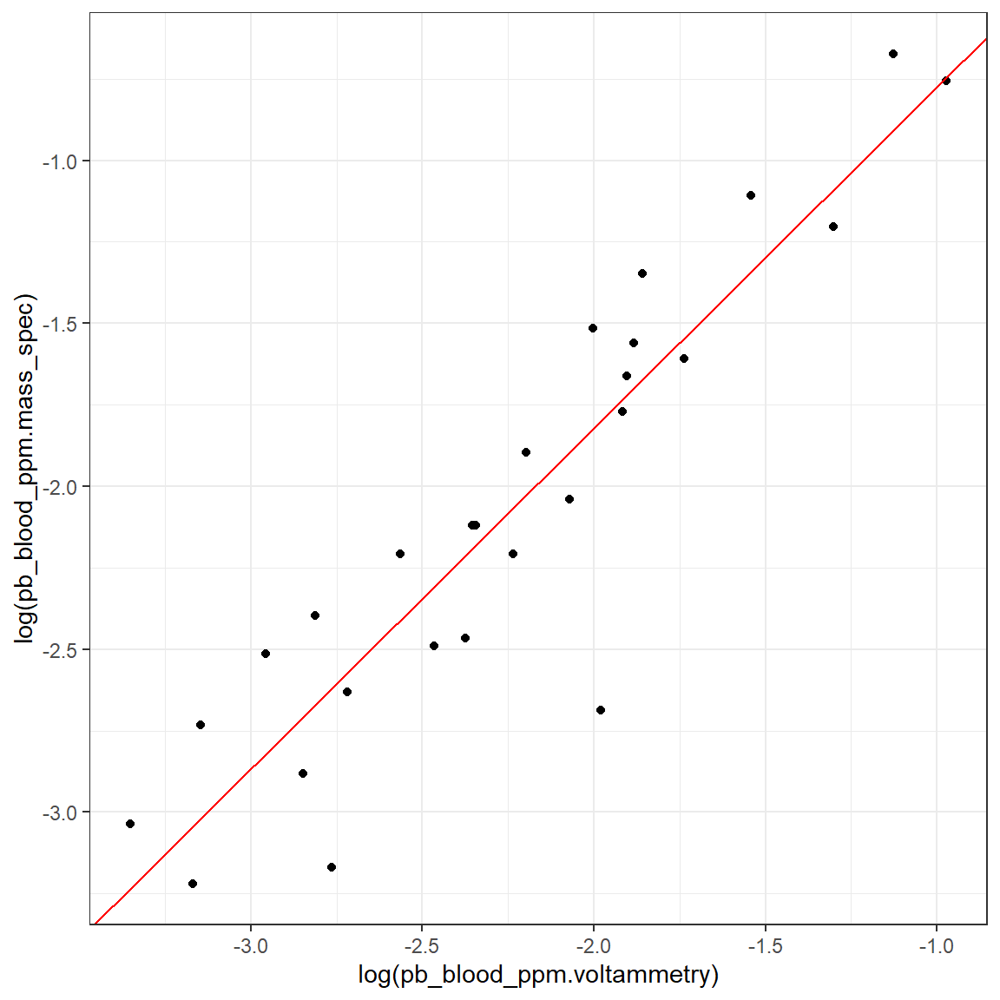
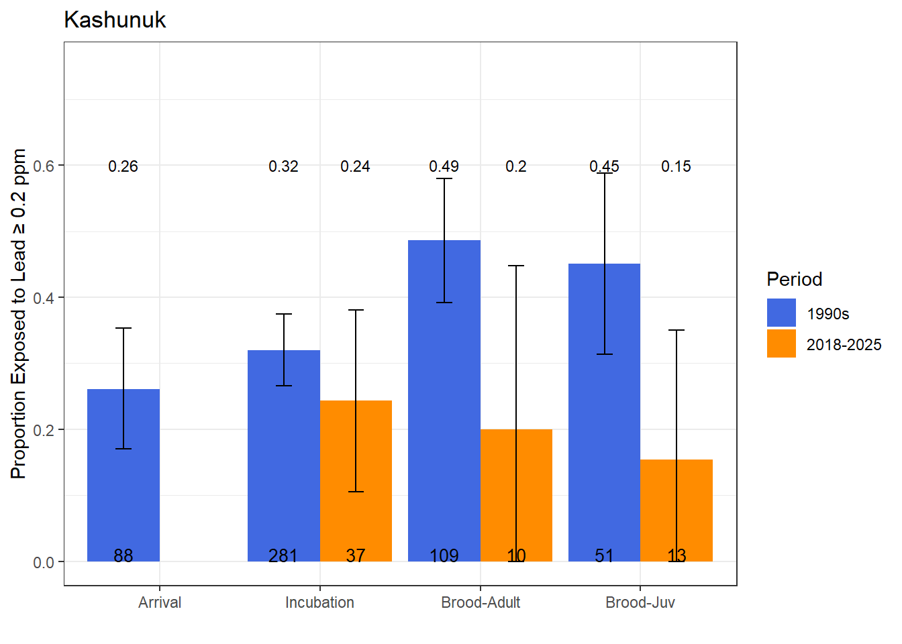
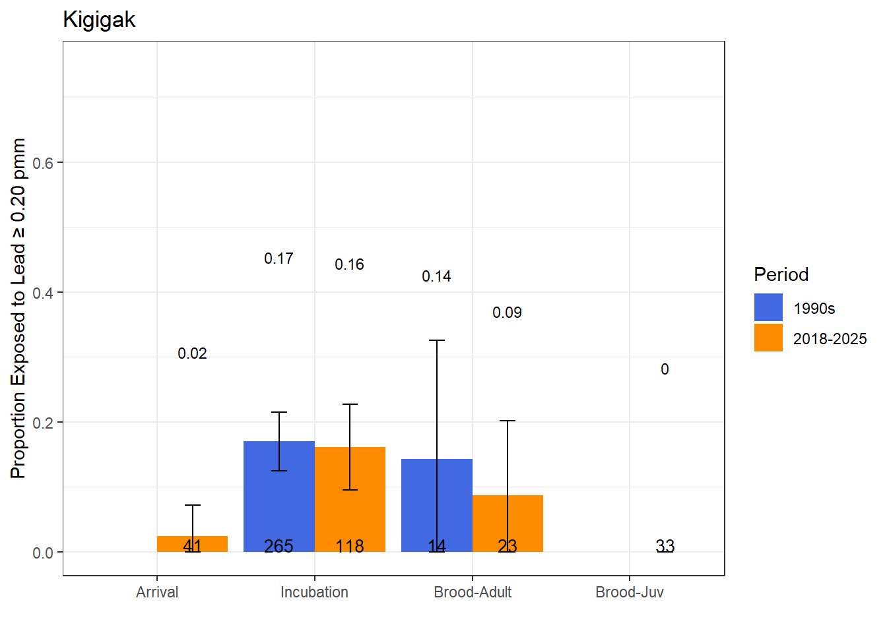

Spectacled Eiders are still being exposed to lead on the Yukon-Kuskokwim Delta, Alaska (DRAFT 20260406)
Daniel Rizzolo
Last updated: 2026-04-06
Checks: 6 1
Knit directory: spei_lead/
This reproducible R Markdown analysis was created with workflowr (version 1.7.2). The Checks tab describes the reproducibility checks that were applied when the results were created. The Past versions tab lists the development history.
The R Markdown is untracked by Git. To know which version of the R
Markdown file created these results, you’ll want to first commit it to
the Git repo. If you’re still working on the analysis, you can ignore
this warning. When you’re finished, you can run
wflow_publish to commit the R Markdown file and build the
HTML.
Great job! The global environment was empty. Objects defined in the global environment can affect the analysis in your R Markdown file in unknown ways. For reproduciblity it’s best to always run the code in an empty environment.
The command set.seed(20230228) was run prior to running
the code in the R Markdown file. Setting a seed ensures that any results
that rely on randomness, e.g. subsampling or permutations, are
reproducible.
Great job! Recording the operating system, R version, and package versions is critical for reproducibility.
Nice! There were no cached chunks for this analysis, so you can be confident that you successfully produced the results during this run.
Great job! Using relative paths to the files within your workflowr project makes it easier to run your code on other machines.
Great! You are using Git for version control. Tracking code development and connecting the code version to the results is critical for reproducibility.
The results in this page were generated with repository version a41a727. See the Past versions tab to see a history of the changes made to the R Markdown and HTML files.
Note that you need to be careful to ensure that all relevant files for
the analysis have been committed to Git prior to generating the results
(you can use wflow_publish or
wflow_git_commit). workflowr only checks the R Markdown
file, but you know if there are other scripts or data files that it
depends on. Below is the status of the Git repository when the results
were generated:
Ignored files:
Ignored: .Rhistory
Ignored: .Rproj.user/
Ignored: admin/
Ignored: analysis/figure/
Ignored: analysis/site_libs/
Ignored: analysis/spei_pb_data_summary_pdf_202600402_files/
Ignored: documents/
Ignored: protocols/
Untracked files:
Untracked: -IFWL-JVVSD43.Rhistory
Untracked: analysis/map_eider_lead_fws_20251121.Rmd
Untracked: analysis/spei_pb_data_summary_20251202.Rmd
Untracked: analysis/spei_pb_data_summary_20251211.Rmd
Untracked: analysis/spei_pb_data_summary_202600330.Rmd
Untracked: analysis/spei_pb_data_summary_202600402.Rmd
Untracked: analysis/spei_pb_data_summary_20260112-IFWL-JVVSD43.Rmd
Untracked: analysis/spei_pb_data_summary_20260112.Rmd
Untracked: analysis/spei_pb_data_summary_docx_202600402.Rmd
Untracked: analysis/spei_pb_data_summary_pdf_202600402.Rmd
Untracked: analysis/spei_pb_data_summary_pdf_202600402.pdf
Untracked: code/est_exp_prob_create_plots_spei_lead_20231211.R
Untracked: code/est_exp_prob_create_plots_spei_lead_updated_20260113.R
Untracked: code/scrap_lead_summary.R
Untracked: data/7030169 data.csv
Untracked: data/README_spei_blood_lead_data.txt
Untracked: data/Rizzolo Lead VSEP22-045 E-report.xlsx
Untracked: data/eider_blood_samples_bands_utq_2022.csv
Untracked: data/eider_lead_fws.csv
Untracked: data/eider_lead_fws_2018-2022.csv
Untracked: data/eider_lead_fws_2018-2025.csv
Untracked: data/eider_lead_fws_2018-2025_20251203.csv
Untracked: data/eider_lead_fws_2023-2025_v2.csv
Untracked: data/eider_lead_fws_FOR_REP_SELECTION.csv
Untracked: data/leadcare2_validation/
Untracked: data/pb_blood_spei_fws_2018-2025.csv
Untracked: data/pb_blood_spei_fws_2018-2025_massSpec_voltam.csv
Untracked: data/pb_blood_spei_fws_validation_20260120.csv
Untracked: data/pb_lc_reps.csv
Untracked: data/pb_merged_all_msResults_lc2Results_20251124.csv
Untracked: data/pb_validation_voltam_mass_spec_20260120.csv
Untracked: data/qtbl_pb_2023-2025.xlsx
Untracked: data/sample_id_spei_blood_lead_2018.csv
Untracked: data/samples_analyzed_2018/
Untracked: data/samples_analyzed_2022/
Untracked: data/samples_analyzed_2025/
Untracked: data/samples_leadCare2_results/
Untracked: data/sourced/
Untracked: data/spei_pb_all_2018-2025.csv
Untracked: data/spei_pb_ms_lc_20251124
Untracked: data/spei_pb_ms_lc_20251124.csv
Untracked: data/temp_pb_all_wide.csv
Untracked: data/temp_wtf_pb_limits_ling.csv
Untracked: data/temp_wtf_pb_limits_wide_all.csv
Untracked: installed_packages.txt
Untracked: metadata/
Unstaged changes:
Modified: .gitignore
Modified: analysis/spei_pb_plot_validation_mass_spec_voltem.Rmd
Note that any generated files, e.g. HTML, png, CSS, etc., are not included in this status report because it is ok for generated content to have uncommitted changes.
There are no past versions. Publish this analysis with
wflow_publish() to start tracking its development.
Attaching package: 'plotly'The following object is masked from 'package:ggplot2':
last_plotThe following object is masked from 'package:stats':
filterThe following object is masked from 'package:graphics':
layoutWelcome to emmeans.
Caution: You lose important information if you filter this package's results.
See '? untidy'Abstract
Spectacled Eiders from the Yukon-Kuskokwim Delta continue to show evidence of lead exposure, 27–34 years after regulations banned lead ammunition for waterfowl hunting. We analyzed 298 whole blood samples collected from breeding sites in the Yukon-Kuskokwim Delta and Arctic Coastal Plain, Alaska, between 2018 and 2025. Lead exposure was detected at all three Yukon-Kuskokwim Delta sites, with some sites showing lead exposure probabilities similar to those recorded three decades ago. No exposure was detected at two Arctic Coastal Plain sites, though small sample sizes limit interpretation of this result. Continued exposure at Yukon-Kuskokwim Delta sites most likely indicates continued use of lead ammunition. Because lead exposure reduces adult female survival, the key driver of Spectacled Eider population dynamics, it may exacerbate recent declines at lead-contaminated sites. These results demonstrate that existing regulations have not eliminated lead sources in breeding habitat and underscore the need for strengthened compliance efforts, elimination of local lead shot availability, and ongoing monitoring to protect Spectacled Eider populations.
Suggested Citation
Rizzolo, D.J. 2026. Spectacled Eiders are still being exposed to lead on the Yukon-Kuskokwim Delta, Alaska. Unpublished U.S. Fish and Wildlife Service Report. Ecological Services Program, Northern Alaska Fish and Wildlife Field Office, Fairbanks, Alaska. [ServCat Link when available]
Introduction
Exposure to lead from ingested spent lead shotgun pellets has been a persistent and harmful problem for waterfowl (Paine et al. 2019). Numerous waterfowl species have been affected by lead ingestion (Bellrose 1959, Anderson et al. 1987, Franson and Bunck 2025), including Spectacled Eiders (Franson et al. 1995), a species protected as threatened under the U.S. Endangered Species Act (USFWS 1993). In the 1990s, Spectacled Eiders on the Yukon-Kuskokwim Delta in Alaska were ingesting spent lead shotgun pellets (Franson et al. 1995, Flint et al. 1997, Franson et al. 1998), which was found to reduce their annual survival probability by 45% (Grand et al. 1998, Flint et al 2016). Population-level effects of ingested lead pellets on waterfowl (Bellrose 1959) eventually motivated regulation of lead shotgun ammunition in the U.S. nationwide in 1991 (USFWS 1991, Byrne 2023). In Alaska, small caliber lead shotgun ammunition was banned for all use (i.e., waterfowl, upland game birds, and small game) in the Yukon-Kuskokwim Region, where Spectacled Eiders breed in high densities, by the state in 2007 (State of Alaska 2007).
Despite regulation, lead exposure has remained problematic in some places due to lack of hunter compliance (Bechet et al. 2025) and persistence of historically deposited lead in the environment (Kanstrup et al. 2020, Lewis et al. 2021). On the Yukon-Kuskokwim Delta, experiments measuring the settlement rate of lead pellets in pond sediment estimated it would take 25 years for 100% of deposited lead pellets to settle deeper than 10 cm into the sediment and become unavailable to Spectacled Eiders (Flint and Schamber 2010). To prevent further deposition of lead pellets through hunter compliance with nontoxic shotgun ammunition regulations, state and federal agencies in Alaska have conducted sustained education and outreach efforts and lead-for-steel ammunition exchange programs across the state, including in the Yukon–Kuskokwim Delta region.
Since 2018, the U.S. Fish and Wildlife Service Endangered Species Recovery Program has collected blood samples from Spectacled Eiders in Alaska to estimate lead exposure rates 27-34 years after the use of lead shotgun ammunition was prohibited. Given that use of lead shotgun ammunition theoretically stopped by the mid-1990s, most previously deposited lead pellets in ponds in the Yukon-Kuskokwim Delta region should no longer be available to Spectacled Eiders and levels of lead in blood of breeding Spectacled Eiders should no longer exceed background concentrations.
Methods
Sample Collection
We collected blood samples opportunistically during projects that required capturing and handling Spectacled Eiders for other objectives. Those projects included satellite transmitter deployments and banding. Captures occurred during three periods of the breeding season: arrival to breeding areas before mean nest initiation, nest incubation, and brood-rearing. We captured adult males and females during arrival to the Yukon-Kuskokwim Delta (Kigigak Island in 2018, the Tutakoke River in 2018, 2022), and Arctic Coastal Plain (Utqiagvik and Teshekpuk Lake in 2022). We captured adult females during incubation (Kigigak Island in 2019, 2021-2025), and adults and ducklings during the brood rearing period (Kashunuk River in 2022 and Kigigak Island in 2022 and 2023).
We captured eiders during arrival to breeding areas using mist nets setup vertically in lakes surrounded by decoys (censu Dau 1976). During incubation, we captured females on nests using bow nets (Salyer 1962), and during brood rearing we captured ducklings and associated adult females by herding broods into mist nets setup vertically above and below the water surface in lakes (censu Dau 1976).
We collected blood samples from eiders using venipuncture of either the jugular or tibiotarsal veins. Jugular blood samples were 1-4 mL and collected using 21 gauge needles and 6 mL syringes; samples were transferred into 4 mL heparinized evacuated containers. Tibiotarsal blood samples were < 0.5 mL and collected by puncturing the vein with a 25 g needle and collecting blood in 1-3 capillary tubes which we transferred into a 1 mL heparinized vial.
Laboratory Analysis
All samples were stored frozen in the field and laboratory until analysis. Samples with volumes > 0.5 mL were analyzed using inductively coupled plasma-mass spectrometry (hereafter mass spectrometry). Samples with volumes < 0.5 mL were analyzed using anodic stripping voltammetry (hereafter voltammetry).
Samples collected in 2018, all > 0.5 mL, were analyzed at the Trace Elements Research Laboratory (TERL) at Texas A & M University (TERL; n = 63). Samples were freeze-dried, homogenized, digested, and analyzed as dry samples. Results were converted to concentrations on the scale of wet mass using the mean moisture content for whole blood of (78.6%, SD = 1.97). Lead concentration was determined using mass spectrometry. Quality assurance-quality control (QAQC) procedures included procedural blanks (n = 4, mean blank equivalent concentration < 0.008 ppm), duplicate samples (n = 3, mean relative difference 3.46%, range 0.38% to 7.48%), and standard reference material percent spike recoveries (mean 103.99%, range 99.16% to 107.56%; TERL 2018). The lower detection limit for methodology used in 2018 was < 0.00369 ppm and there was no upper limit.
Blood samples > 0.5 mL collected 2021-2025 were analyzed in two batches (samples collected 2021-2022 analyzed in 2022, n = 138; samples collected 2023-2025 analyzed in 2025, n = 74) at the Washington Animal Disease Diagnostic Laboratory (WADDL) using mass spectrometry and nitric acid digestion. QAQC procedures included procedural blanks (n = 19, mean blank equivalent concentration 0.015 ppm, range: 0.0 to 0.17 ppm), duplicate samples (n = 10, mean relative difference 5.12%, range: 1.01% to 10.30%), standard reference material percent spike recoveries (mean 98%, range 84% to 109%), and control reference samples (mean percent difference = 12%, range 0.0% to 30.4%, n = 41; WADDL 2022). The lower detection limit for methodology used in 2022 and 2025 was < 0.02 ppm and there was no upper limit.
Blood samples < 0.5 mL collected 2023-2025 (n = 23) were analyzed using a LeadCare II blood point-of-care blood lead testing system (Magellan Diagnostics, Billerica, MA), which uses voltammetry to quantify lead concentration in whole blood. The LeadCare II analyzer was designed to test freshly collected human blood, but has been used to test previously frozen avian blood (Brown et al. 2006, Herring et al. 2018). Detection limits for LeadCare II are > 0.033 ppm and < 0.65 ppm. Samples outside of this range are reported by the instrument as either high (> 0.65 ppm) or low (< 0.033). LeadCare II testing was done at the USFWS Northern Alaska Fish and Wildlife Field Office Laboratory following the protocol described in the LeadCare II User’s Guide (Magellan Diagnostics 2022). QAQC duplicate samples were consistent when above the detection limit (i.e., allregistered as high; n = 4 paired samples). For paired samples with at least 1 sample below the detection limit (n = 23 paired samples), 87% of sample pairs were also under the lower detection limit. Of the three paired samples with one sample below the detection limit and the other above that limit, the mean lead concentration of the sample above the limit was 0.045 ppm (range: 0.035 to 0.062 ppm), with a mean percent absolute difference of 21%. Further paired sample analysis is required within the detection limits of LeadCare II.
Voltammetry Validation
We used the LeadCare II system to test a subset of samples (n = 93) that were analyzed using mass spectrometry to assess the agreement of results from the two methods using mass spectrometry results as the standard for comparison. The LeadCare II blood analyzer has a narrower range of detection than mass spectrometry. We first compared results from LeadCare II that were below (< 0.033 ppm) or above (> 0.65 ppm) the instrument’s detection limits to their corresponding mass spectrometry values to confirm that LeadCare II lower detection limit samples were all < 0.033 ppm and all upper detection limit values values were > 0.65 ppm, according to mass spectrometry results.
We used results from samples analyzed by both methods with values within the detection limits of LeadCare II to examine the correlation between LeadCare II results and mass spectrometry results. We fit a linear model using log-transformed mass spectrometry values as the response variable and log-transformed LeadCare II values as the explanatory variable. We used model parameter estimates to assess the association between mass specrometry values and LeadCare II values through the estimated slope value, with a slope = 1.0 indicating perfect correspondence between methods. Further, if results indicated bias in LeadCare II results, we used parameter estimates from the model to correct for the bias in LeadCare II values prior to estimating lead exposure rates.
Lead Exposure Estimates
Elevated blood lead concentrations indicate recent, point-source exposure to lead in the environment (Franson and Pain 2011). We categorized lead exposure, from mass spectrometry and adjusted voltammetry results, based on accepted thresholds: blood lead values \(\ge\) 0.20 ppm indicate exposure above background levels with subclinical effects; values \(\ge\) 0.50 ppm indicate potential lead toxicosis; values > 1.0 ppm indicate potentially severe lead toxicosis (Franson and Pain 2011, Table 16.1). We used logistic regression models (i.e., models that assume a binomial distribution and use a logit link to the data) fit in Program R (R Core Team 2025) to estimate the probability of lead exposure (i.e., blood lead concentrations \(\ge\) 0.20 ppm) and associated 95% confidence intervals for each study site (Kashunuk River, Kigigak Island, Tutakoke River on the Yukok-Kuskokwim Delta and Utqiagvik and Teshekpuk Lake on the Arctic Coastal Plain) and during each capture period (arrival, incubation, brood rearing).
Historical Comparison
In the 1990s, the probability of exposure to lead for Spectacled Eiders, based on blood lead concentrations, was estimated for sites throughout the Yukon-Kuskokwim Delta (Flint et al. 1997, Franson et al. 1998, Flint et al. 2016). We compared exposure rates between samples collected in the 1990s from the Kashunuk River (1993-1999), Kigigak Island (1994-1999), and the Tutakoke River (1997-1998; Flint and Petersen 2023) and samples from the 2018-2025 period at those sites. We also included samples collected during incubation from Spectacled Eiders at the Kashunuk River in 2022 (Flint et al. 2023, Flint and Petersen 2023) as an additional measure of recent exposure. We compare exposure between the 1990s and the 2018-2025 period by site and sampling period based on 95% confidence interval coverage relative to point estimates (Cumming et al. 2007).
We present all estimates as mean (lower, upper 95% confidence limit), unless otherwise noted.
Results
We analyzed 298 whole blood samples for lead concentration (Table 1). We obtained results using mass spectrometry from 275 samples, and using voltammetry from 22 samples. Additionally, 94 samples were analyzed using both methods. Most (95%) of samples were from sites on the Yukon-Kuskokwim Delta.
Samples collected during the arrival period were from malesand females. All incubation samples were from females and samples from the brood rearing period were female adults and both male and female ducklings. Sample sizes by study site, sampling period, and age class ranged from two samples collected from after hatch year females at Teshekpuk Lake to 118 samples from incubating females at Kigigak Island (Table 1).
| Site | Period | Age | n |
|---|---|---|---|
| Kashunuk | Brood | Adult | 10 |
| Kashunuk | Brood | Duckling | 13 |
| Kigigak | Arrival | Adult | 41 |
| Kigigak | Incubation | Adult | 118 |
| Kigigak | Brood | Adult | 23 |
| Kigigak | Brood | Duckling | 33 |
| Teshekpuk | Arrival | Adult | 2 |
| Tutakoke | Arrival | Adult | 46 |
| Utqiagvik | Arrival | Adult | 9 |
| Utqiagvik | Incubation | Adult | 3 |
Voltammetry Validation
Of the voltammetry results that were below the lower detection limit of the method (0.033 ppm), 83.6 % (46 of 55 samples) had mass spectrometry results that were < 0.033 ppm. The mass spectrometry results > 0.033 ppm that when analyzed by LeadCare II were below the instrument’s 0.033 ppm detection limit ranged from 0.034 to 0.064 ppm (mean 0.045 ppm, 0.012 ppm mean deviation from the voltammetry lower detection limit).
Of the voltammetry results greater than the upper detection limit of the method (0.65 ppm), 100.0 % (5 of 5 samples) had mass spectrometry results > 0.65 ppm.
The linear association between 23 samples analyzed by both mass spectrometry and voltammetry on the log-log scale had a y-intercept of 0.27 (-0.15, 0.70) and slope of 1.05 (0.86, 1.23; Fig. 1). The slope estimate suggests a possible negative bias with voltammetry values tending to be lower than mass spectrometry values. Given a 10% increase in lead concentration determined by voltammetry, lead concentration assessed by mass spectrometry increased by 10.5%. The slope estimate was not convincingly different from 1.0 based on confidence interval coverage; however, given the small sample size and results from previous studies that have consistently shown a negative bias in LeadCare II results from previously frozen avian blood (Herring et al. 2018), we adjusted LeadCare II results prior to lead exposure classification. We used the linear model parameters and LeadCare II results to calculate model fitted values corrected for the negative bias in LeadCare II results and back transformed those values from the log scale to parts per million (ppm).

The mean difference between mass spectrometry results and voltammetry results was 0.033 ppm. After voltammetry results were adjusted for their likely negative bias relative to mass spectrometry results, the mean difference between methods was 0.006 ppm.
Model parameters were used to adjust voltammetry values within the LeadCare II detection limits in the full data set. That data set included 7 samples (of 27 samples) that were analyzed using only LeadCare II and that were within the detection limits of the instrument. Of those 7 samples, only one had a blood lead value below the 0.20 ppm exposure threshold value (metal band 200741887 sampled 2023-06-26, blood lead = 0.178 ppm) that was above the threshold after it was model-adjusted (model adjusted value = 0.216 ppm). The remaining 6 values were well below the exposure threshold (mean of original values 0.048 ppm, mean after model adjustment 0.055 ppm). Of the remaining 20 samples, 3 were above the LeadCare II upper detection limit and 17 were below the instrument’s lower detection limit.
Lead Exposure Thresholds
During the 2018-2025 period, lead exposure in Spectacled Eiders was detected at all three Yukon-Kuskokwim Delta sites (Kashunuk River, Kigigak Island, Tutakoke River; Table 2). Lead exposure probability estimates > 0.0 ranged from 0.02 (0.0, 0.07, n = 41) during the arrival period at Kigigak Island to 0.20 (0.0. 0.45; n = 10) in adult females during brood rearing at the Kashunuk River. Lead exposure probability was 0.0 for ducklings during brood rearing at Kigigak Island. No exposure was detected at the two sites on the Arctic Coastal Plain, although sample sizes at these sites were small (Utqiagvik, n = 12; Teshekpuk Lake, n = 2; Table 2).
| Site | Period | Age | n | Count ≥ 0.20 ppm | Count ≥ 0.50 ppm | Count ≥ 1.0 ppm |
|---|---|---|---|---|---|---|
| Kashunuk | Brood | Adult | 10 | 2 | 0 | 0 |
| Kashunuk | Brood | Duckling | 13 | 2 | 0 | 0 |
| Kigigak | Arrival | Adult | 41 | 1 | 1 | 1 |
| Kigigak | Brood | Adult | 23 | 2 | 1 | 1 |
| Kigigak | Brood | Duckling | 33 | 0 | 0 | 0 |
| Kigigak | Incubation | Adult | 118 | 19 | 14 | 9 |
| Teshekpuk | Arrival | Adult | 2 | 0 | 0 | 0 |
| Tutakoke | Arrival | Adult | 46 | 2 | 0 | 0 |
| Utqiagvik | Arrival | Adult | 9 | 0 | 0 | 0 |
| Utqiagvik | Incubation | Adult | 3 | 0 | 0 | 0 |
| Site | Study Period | Capture Period | Sex | Age | n | Probability | LCL | UCL |
|---|---|---|---|---|---|---|---|---|
| Kigigak | 2018-2025 | Arrival | F,M | Adult | 41 | 0.024 | 0.000 | 0.072 |
| Kigigak | 2018-2025 | Incubation | F | Adult | 118 | 0.161 | 0.095 | 0.227 |
| Kigigak | 2018-2025 | Brood-Adult | F | Adult | 23 | 0.087 | 0.000 | 0.202 |
| Kigigak | 2018-2025 | Brood-Juv | F,M | Duckling | 33 | 0.000 | 0.000 | 0.000 |
| Teshekpuk | 2018-2025 | Arrival | F,M | Adult | 2 | 0.000 | 0.000 | 0.000 |
| Tutakoke | 2018-2025 | Arrival | F,M | Adult | 46 | 0.043 | 0.000 | 0.102 |
| Utqiagvik | 2018-2025 | Arrival | F,M | Adult | 9 | 0.000 | 0.000 | 0.000 |
| Utqiagvik | 2018-2025 | Incubation | F | Adult | 3 | 0.000 | 0.000 | 0.000 |
| Kashunuk | 2018-2025 | Brood-Adult | F | Adult | 10 | 0.200 | 0.000 | 0.448 |
| Kashunuk | 2018-2025 | Brood-Juv | F,M | Duckling | 13 | 0.154 | 0.000 | 0.350 |
Historical Comparison
Where sample sample sizes for the 2018-2025 period were largest and estimates of exposure probability had the highest resolution (Kashunuk River incubation = 0.243 [0.105, 0.381], Flint 2023; Kigigak Island incubation = 0.161 [0.095, 0.227]; Kigigak Island brood rearing adults = 0.087 [0.000, 0.202]) lead exposure probabilities were similar to the 1990s (Kashunuk River incubation = 0.320 [0.266, 0.375], Kigigak Island incubation = 0.170 [0.125, 0.215], and Kigigak Island brood rearing adults = 0.143 [0.000, 0.326]; Fig. 2). At the Tutakoke River, where the probability of lead exposure during the 1990s was low (0.042 [0.000, 0.122]), it remained low during the 2018-2025 period (0.043 [0.000, 0.102]; Fig. 2). Point estimates of exposure rates at the Kashunuk River during brood rearing for adults and ducklings suggest a decline from the 1990s, but broad 95% confidence intervals around those estimates do not support the inference of a decline.



Discussion
We found that Spectacled Eiders on the Yukon-Kuskokwim Delta of Alaska were still being exposed to lead three decades after the use of lead shotgun ammunition was prohibited by federal regulation. Further, the lead exposure probability estimates from the 2018-2025 period with the largest sample sizes and highest precision were similar to those documented from the 1990s, suggesting similar levels of availability of lead at those sites rather than a decline in availability. Similarly, at the site where lead exposure was low in the 1990s (the Tutakoke River), lead exposure remained low during the 2018-2025 period. We found no evidence of lead exposure in the small sample from two sites on the Arctic Coastal Plain, consistent with previous studies that suggest lead exposure is less frequent in that region (Wilson et al. 2007, Miller et al. 2016). However, larger sample sizes are required to draw conclusions regarding contemporary lead exposure rates at sites on the Arctic Coastal Plain.
The presence of lead in blood at concentrations \(\ge\) 0.20 ppm indicates recent exposure to a specific source of lead contamination (Franson and Pain 2011). Spent shotgun pellets are the most likely source of lead in the blood of Spectacled Eiders from the Yukon-Kuskokwim Delta. Spectacled Eiders, like other waterfowl, ingest lead pellets encountered in pond sediments while foraging, possibly as grit (Mateo and Guitart 2000). In the 1990s, x-ray images of ducks, including Spectacled Eiders, at the Kashunuk River identified ingested shot in the gizzards of individuals with high concentrations of lead in their blood (Flint et al. 1997). Pellets removed by lavage were confirmed to be lead (Flint et al. 2016). Further, stable isotope ratios of lead from the lead in blood of eiders with high blood lead concentrations were most similar to the isotopic ratios of lead shotgun pellets rather than the isotopic ratio of lead in local sediments, which had lead concentrations < 0.02 ppm (Matz et al. 2005).
The relative contributions of recently and historically deposited lead pellets to the exposure of Spectacled Eiders is unknown. Lead pellet settlement rates measured over ten years found 50% of deposited lead pellets remained in the upper 10 cm of pond bottom sediment, where they would be available to Spectacled Eiders (Flint and Schamber 2010). Extrapolating that settlement rate, Flint and Schamber (2010) predicted that 100% of pellets would settle to > 10 cm and be unavailable to Spectacled Eiders 25 years after deposition. If that estimate is correct, the source of contemporary lead exposure in Spectacled Eiders is the recent use of lead shot. However, if the settlement rate of lead pellets decreased after ten years, then a longer duration than 25 years would be required to make all pellets unavailable to Spectacled Eiders and some portion of recent exposure may be related to pellets deposited in the 1990s. Even with a slower settlement rate, the abundance of historically deposited lead pellets and the lead exposure probability of Spectacled Eiders should decline relative to the 1990s absent continued deposition of lead pellets, as found in other waterfowl species at other sites (Anderson et al. 2000, Samuel and Bowers 2000). Given similar exposure rates between the 1990s and 2018–2025, use of lead shot is highly likely to have occurred during that latter period.
We did not investigate the source of lead in the 2018-2025 blood samples; however, we can identify no new source of lead in the local environment that offers a more plausible explanation for the source of lead than spent lead ammunition (e.g., mining or industrial waste, lead-based paint, etc.). This conclusion is supported by the continued availability of lead shotgun ammunition for purchase in communities near the Yukon-Kuskokwim Delta study sites. Lead shotgun ammunition remains available for purchase because regulations prohibit its use and possession while hunting, but not its sale. In addition, the use of non-toxic ammunition may be influenced by the overall availability of ammunition in rural communities (Schwing 2022).
While even very low exposure levels to lead have adverse physiological effects (Pain et al. 2019), lead exposure in birds typically is not associated with overt symptoms until exceeding blood concentrations ≥ 0.50 ppm, when symptoms like loss of body mass and ataxia can be apparent, and > 1.0 ppm, when lead toxicosis can be life threatening (Fanson and Pain 2016). At Kigigak Island during incubation, 11.9% of samples had blood concentrations above the threshold for clinical poisoning, and of those, 7.6% were above the threshold for severe lead toxicosis. Overt toxicity and mortality due to lead was documented in Spectacled Eiders at the Kashunuk River and Kigigak Island in the 1990s (Franson et al. 1995, Flint and Grand 1997), and lead toxicosis was documented in a Pacific Loon (Gavia pacifica) on Kigigak Island in 2002 (Wilson et al. 2004). Most Spectacled Eiders sampled during 2018-2025 appeared normal during the brief period of capture and handling; however, biologists in the field encountered two individuals during the incubation period at Kigigak Island that were unable to fly and were easily captured by hand. The first (band 2007-06599 captured on 2024-06-01) had a blood lead concentration of 0.15 ppm, below the threshold for subclinical poisoning at the time of sampling. The other (band 2007-62282 captured on 2023-06-18) had a blood lead concentration of 2.5 ppm and was likely exhibiting symptoms of lead poisoning.
For Spectacled Eider populations, continued exposure to lead indicates that the effects of lead documented during the 1990s are ongoing Importantly, lead exposure reduces the survival of breeding females, which has the greatest influence on population growth rate relative to other demographic rates (Flint et al. 2016). During the 1990s, lead exposure levels were high enough to influence the size and trend of some subpopulations (e.g., the Kashunuk River, Flint et al. 2016). Numbers of Spectacled Eiders on Yukon-Kuskokwim Delta increased from the 1990s through the early 2000s (Dunham et al. 2021, USFWS 2021), but have declined substantially since 2021 (USFWS unpublished data). Winter habitat conditions have been shown to influence adult female survival (Flint et al. 2016, Christie et al. 2018, Dunham et al. 2021), which suggests recent declines in Alaska may reflect reduced overwinter survival. Because lead exposure reduces survival probability of females that have survived the preceding winter, its effect is additive to sources of mortality during the non-breeding period. Thus, in breeding areas contaminated with lead, exposure to lead is likely to accelerate population declines driven by winter habitat conditions.
Lead ammunition remains an insidious problem for wildlife (Haig et al. 2014). At some sites with high hunter compliance with regulations but extremely high historical rates of lead pellet deposition (e.g., 250 kg shot per ha; Kanstrup et al. 2020), waterfowl continue to be exposed to lead despite regulations restricting its use (Kanstrup et al. 2020; Lewis et al. 2021). Waterfowl harvest in the Yukon-Kuskokwim coastal region is estimated to be 60,000 birds per year (Naves and Schamber 2024) by subsistence hunters in 20 small, rural communities. Flint et al. (2016) found the probability of exposure to lead for Spectacled Eiders was higher closer to villages and large rivers, which likely reflects lead pellet distribution in the region. Shotgun pellet disposition rates on the Yukon-Kuskokwim Delta, however, are likely orders of magnitude lower than at sites with intensive hunting near urban areas.
Low hunter compliance can also cause continued lead pellet deposition into waterfowl habitats (Bechet et al. 2025). The Yukon–Kuskokwim region presents a unique challenge in achieving hunter compliance because subsistence waterfowl harvest is vital for both food security and cultural practice (Naves and Schamber 2024). The continued legal sale of lead shotgun ammunition in these communities complicates efforts to fully transition to non-toxic shot. As long as lead shot is available, community engagement efforts (education and outreach, lead-for-steel ammunition exchanges, etc.) must continue to attempt to prevent its use. Efforts must also be focused on eliminating the availability of lead shotgun ammunition in areas where it has no legal use for hunting. These efforts can be either regulatory or voluntary through agreements with ammunition distributors. The ongoing exposure of Spectacled Eiders to lead, even after 30 years of regulation, demonstrates that current policies have not succeeded in preventing harm despite abundant evidence of lead’s toxicity.
Ethics Statement
All protocols were approved by the U.S. Fish and Wildlife Service Alaska Region Institutional Animal Care and Use Committee under protocols 2018-001, 2019-004, 2022-003, 2022-004, and 2025-004. Capture and handling for banding was done under Federal Bird Banding Permit 21146.
Acknowledgements
This work was funded by the U.S. Fish and Wildlife Service (through the Cooperative Recovery Initiative, State of the Birds, and Proactive Conservation programs), the Bureau of Land Management, and the University of Alaska Fairbanks. Neesha Stellrecht and Kate Martin obtained funding. The Yukon Delta National Wildlife Refuge provided logistical and financial support. This work would not have been possible without the hard work and dedication of a large team of field biologists. Any use of trade names is for descriptive purposes only and does not imply endorsement by the U.S. Government.
Supplemental Material
All data used in this report will be available on the U.S. Fish and Wildlife Service Catalog (ServCat; https://iris.fws.gov/APPS/ServCat/). All data currently reside in the Regional Data Repository (fesnae_013_SPEI_BloodLead/).
Literature Cited
Anderson, W. L., S. P. Havera, & R. A. Montgomery. (1987). The incidence of ingested shot in waterfowl in the Mississippi Flyway, 1977-1979. Wildlife Society Bulletin, 15(2), 181-188. https://www.jstor.org/stable/3782599
Anderson, W. L., S. P. Havera, & B. W. Zercher. (2000). Ingestion of lead and nontoxic shotgun pellets by ducks in the Mississippi Flyway. Journal of Wildlife Management, 64(3), 848–857. https://doi.org/10.2307/3802755
Bechet, A., A. Olivier, F. Cavallo, L. Sauvajon, J. Champagnon, P. Defos du Rau, & J. Mondain‑Monval. (2021). Persistent lead poisoning of waterfowl in the Camargue (southern France) 10 years after the ban on the use of lead ammuntion in wetlands. Conservation Science and Practice, 7, e70045. https://doi.org/10.1111/csp2.70045
Bellrose, F. C. (1959). Lead poisoning as a mortality factor in waterfowl populations. Illinois Natural History Survey Bulletin, 27, 236–288. https://doi.org/10.21900/j.inhs.v27.172
Brown, C. S., J. Luebbart, D. Mulcahy, J. Schamber, & D. H. Rosenberg. (2006). Blood lead levels of wild Steller’s Eiders (Polysticta stelleri) and Black Scoters (Melanitta nigra) in Alaska using a portable blood lead analyzer. Journal of Zoo and Wildlife Medicine, 37(3), 361–365.
Byrne, R. (2023). Review of the legal and regulatory history of lead in hunting. Wildlife Society Bulletin, 47, Article e1465. https://doi.org/10.1002/wsb.1465
Christie, K. S., T. E. Hollmen, P. L. Flint, & D. Douglas. (2018). Non‑linear effect of sea ice: Spectacled Eider survival declines at both extremes of the ice spectrum. Ecology and Evolution, 8, 11808–11818. https://doi.org/10.1002/ece3.4637
Cumming, G., F. Fidler, & D. L. Vaux. (2007). Error bars in experimental biology. The Journal of Cell Biology, 177(1), 7–11.
Dau, C. P. (1976). Capturing and marking Spectacled Eiders in Alaska. Bird‑Banding, 47, 273.
Dunham, K. D., A. M. Tucker, D. N. Koons, A. Abebe, F. S. Dobson, & J. B. Grand. (2021). Demographic responses to climate change in a threatened Arctic species. Ecology and Evolution, 11(15), 10627–10643. https://doi.org/10.1002/ece3.7873
Flint, P. L. (2023). Status of Spectacled Eiders (Somateria fisheri) on the Yukon‑Kuskokwim Delta, Alaska, 2022 – Testing and updating predictive models (USGS Open‑File Report 2023‑1052). U.S. Geological Survey. https://pubs.usgs.gov/publication/ofr20231052/full
Flint, P. L., & J. B. Grand. (1997). Survival of Spectacled Eider adult females and ducklings during brood rearing. Journal of Wildlife Management, 61(1), 217–221. https://doi.org/10.2307/3802430
Flint, P. L., J. B. Grand, & M. R. Petersen. (2016). Effects of lead exposure, environmental conditions, and metapopulation processes on population dynamics of Spectacled Eiders. North American Fauna, 81, 1–41. https://doi.org/10.3996/nafa.81.0001
Flint, P. L., & M. R. Petersen. (2023). Waterfowl lead exposure data in Alaska and Russia, 1993–2022: U.S. Geological Survey data release. https://doi.org/10.5066/F7B27SDZ
Flint, P. L., & J. Schamber. (2010). Long‑term persistence of spent lead shot in tundra wetlands. Journal of Wildlife Management, 74(1), 148–151.
Flint, P. L., M. R. Petersen, & J. B. Grand. (1997). Exposure of Spectacled Eiders and other diving ducks to lead in western Alaska. Canadian Journal of Zoology, 75(3), 439–443. https://doi.org/10.1139/z97-054
Franson, J. C., & C. M. Buck. (2025). Lead exposure in waterfowl before nontoxic shot requirements: A nationwide study, 1983-1986. Journal of Wildlife Management, 89(8), 1-13. https://doi.org/10.1002/jwmg.70083
Franson, J. C., M. R. Petersen, C. U. Meteyer, & M. R. Smith. (1995). Lead poisoning of Spectacled Eiders (Somateria fischeri) and of a common eider (Somateria mollissima) in Alaska. Journal of Wildlife Diseases, 31(2), 268–271. https://doi.org/10.7589/0090-3558-31.2.268
Franson, J. C., M. R. Petersen, L. H. Creekmore, P. L. Flint, & M. R. Smith. (1998). Blood lead concentrations of Spectacled Eiders near the Kashunuk River, Yukon Delta National Wildlife Refuge, Alaska. Ecotoxicology, 7(3), 175–181. https://doi.org/10.1023/A:1014308411665
Franson, J. C., & D. J. Pain. (2011). Lead in birds. In W. Beyer & J. Meador (Eds.), Environmental contaminants in biota: Interpreting tissue concentrations (2nd ed., pp. 331–350). CRC Press, Boca Raton, FL, USA.
Grand, J. B., P. L. Fling, M. R. Petersen, & C. L. Moran. (1998). Effects of lead poisoning on Spectacled Eider survival rates. Journal of Wildlife Management, 62(3), 1103–1109. https://doi.org/10.2307/3802550
Haig, S. M., R. G. D’Eon, C. A. Eagles‑Smith, J. M. Fair, G. Herring, & others. (2014). The persistent problem of lead poisoning in birds from ammunition and fishing tackle. The Condor: Ornithological Applications, 116(3), 408–423. https://doi.org/10.1650/CONDOR-14-61.1
Herring, G., C. A. Eagles‑Smith, B. Bedrosian, D. Craighead, R. Domenech, H. W. Langner, C. N. Parish, A. Shreading, A. Welch, & R. Wolstenholme. (2018). Critically assessing the utility of portable lead analyzers for wildlife conservation. Wildlife Society Bulletin, 42(2), 284–294. https://doi.org/10.1002/wsb.892
Kanstrup, N., V. G. Thomas, & J. K. Larsen. (2018). Hunting with lead ammunition is not sustainable: European perspectives. Ambio, 47(2), 132–147. https://doi.org/10.1007/s13280-017-0950-6
Kanstrup, N., J. K. Larsen, J. Madsen, & V. G. Thomas. (2020). Toxic lead gunshot persists accessible to waterbirds after a 33‑year ban on their use. Environmental Science and Pollution Research, 27(10), 10006–10017. https://doi.org/10.1007/s11356-020-08021-y
Lewis, B. A., & others. (2021). Blood lead declines in wintering American black ducks in New Jersey following the lead shot ban. Environmental Toxicology and Chemistry, 40(7), 1995–2004. https://doi.org/10.1002/etc.5030
Magellan Diagnostics, Inc. (2022). LeadCare II Blood Analyzer User’s Guide (70‑6551 Rev. 12) [Manual]. http://www.magellandx.com/uploads/2025/11/MAN70-6551-LCII-Users-Manual-Rev-13.pdf
Mateo, R., & R. Guitart. (2000). The effects of grit supplementation and feed type on shot ingestion in mallards. Preventive Veterinary Medicine, 44(3–4), 221–229.
Matz, A., P. L. Flint, & D. Unruh. (2005). Sources of Pb exposure in eiders in Alaska (Final Report, Alaska SeaLife Center).
Miller, M. J., M. L. Mallory, J. J. O’Grady, & others. (2016). Trace elements in sea ducks of the Alaskan Arctic coast: Patterns of variation among species, sexes, and ages. Science of the Total Environment, 571, 143–153. https://doi.org/10.1016/j.scitotenv.2016.07.158
Naves, L. C., & J. L. Schamber. (2024). Harvest of waterfowl and Sandhill Crane in rural Alaska: Geographic and seasonal patterns. PLoS ONE, 19
Paine, T. D. (2019). Effects of lead from ammunition on birds and other wildlife: A review and update. Environmental Advances, 3, 100033. https://doi.org/10.1016/j.envadv.2019.100033
R Core Team. (2025). R: A language and environment for statistical computing (Version 4.5.3) [Computer software]. R Foundation for Statistical Computing. https://www.R-project.org/
Salyer, J. (1962). A bow‑net trap for ducks. Journal of Wildlife Management, 26(2), 219–221.
Samuel, M. D., & E. F. Bowers. (2000). Lead exposure in American black ducks after implementation of non-toxic shot. Journal of Wildlife Management, 64(4), 947–953. https://doi.org/10.2307/3803218
Schwing, E. (2022). A shotgun shell shortage is making it hard for Y‑K Delta hunters to harvest migratory birds. Alaska Public Media & KYUK, 23 May 2022. https://alaskapublic.org/xx-statewide-news/2022-05-23/a-shotgun-shell-shortage-is-making-it-hard-for-y-k-delta-hunters-to-harvest-migratory-birds
State of Alaska. (2007). Regulations adopted by the Alaska Board of Game amending 5 AAC 92.080 to prohibit the use of lead shot in Unit 18. Alaska Administrative Register.
TERL [Texas A&M Agrilife Research Laboratory]. (2018). Analytical results report for catalog 7030169. Texas A&M Agrilife Research. [add ServCat URL]
USFWS [U.S. Fish and Wildlife Service]. (1991). Migratory bird hunting: Nationwide requirement to use nontoxic shot for the taking of waterfowl, coots, and certain other species beginning in the 1991–92 hunting season. Federal Register, 56(9), 1446–1453.
USFWS [U.S. Fish and Wildlife Service]. (1993). Endangered and threatened wildlife and plants; final rule to list Spectacled Eider as threatened. Federal Register, 58(88), 27474–27480.
USFWS [U.S. Fish and Wildlife Service]. (2021). Species status assessment for the Spectacled Eider version September 29, 2021. U.S. Fish and Wildlife Service, Fairbanks Fish and Wildlife Field Office, Fairbanks, AK, USA.
WADDL [Washington Animal Disease Diagnostic Laboratory]. (2022). QAQC data file, eider_lead_2022_quality_control_case_VSEP22‑045E.xlsx. Washington Animal Disease Diagnostic Laboratory, University of Idaho. [add ServCat URL]
Wilson, L. K., P. L. Flint, & A. N. Powell. (2007). Coupling contaminants with demography: Effects of lead and selenium in Pacific common eiders. Environmental Toxicology and Chemistry, 26(11), 2359–2366. https://doi.org/10.1897/07-217.1
Wilson, L. K., J. L. Oyen, & L. Sileo. (2004). Lead shot poisoning of a Pacific loon in Alaska. Environmental Pollution, 129(3), 373–381. https://doi.org/10.1016/j.envpol.2003.11.019
sessionInfo()R version 4.5.3 (2026-03-11 ucrt)
Platform: x86_64-w64-mingw32/x64
Running under: Windows 11 x64 (build 26100)
Matrix products: default
LAPACK version 3.12.1
locale:
[1] LC_COLLATE=English_United States.utf8
[2] LC_CTYPE=English_United States.utf8
[3] LC_MONETARY=English_United States.utf8
[4] LC_NUMERIC=C
[5] LC_TIME=English_United States.utf8
time zone: America/Anchorage
tzcode source: internal
attached base packages:
[1] stats graphics grDevices utils datasets methods base
other attached packages:
[1] tinytex_0.59 leaflet_2.2.3 kableExtra_1.4.0 emmeans_2.0.2
[5] knitr_1.51 plotly_4.12.0 ggplot2_4.0.2
loaded via a namespace (and not attached):
[1] sass_0.4.10 generics_0.1.4 tidyr_1.3.2
[4] xml2_1.5.2 lattice_0.22-9 stringi_1.8.7
[7] digest_0.6.39 magrittr_2.0.4 estimability_1.5.1
[10] evaluate_1.0.5 grid_4.5.3 RColorBrewer_1.1-3
[13] mvtnorm_1.3-6 fastmap_1.2.0 rprojroot_2.1.1
[16] workflowr_1.7.2 jsonlite_2.0.0 promises_1.5.0
[19] httr_1.4.8 purrr_1.2.1 crosstalk_1.2.2
[22] viridisLite_0.4.3 scales_1.4.0 textshaping_1.0.5
[25] lazyeval_0.2.2 jquerylib_0.1.4 cli_3.6.5
[28] rlang_1.1.7 withr_3.0.2 cachem_1.1.0
[31] yaml_2.3.12 otel_0.2.0 tools_4.5.3
[34] coda_0.19-4.1 dplyr_1.2.0 httpuv_1.6.17
[37] vctrs_0.7.2 R6_2.6.1 lifecycle_1.0.5
[40] git2r_0.36.2 stringr_1.6.0 fs_2.0.1
[43] htmlwidgets_1.6.4 pkgconfig_2.0.3 pillar_1.11.1
[46] bslib_0.10.0 later_1.4.8 gtable_0.3.6
[49] glue_1.8.0 data.table_1.18.2.1 Rcpp_1.1.1
[52] systemfonts_1.3.2 xfun_0.57 tibble_3.3.1
[55] tidyselect_1.2.1 rstudioapi_0.18.0 xtable_1.8-8
[58] farver_2.1.2 htmltools_0.5.9 labeling_0.4.3
[61] svglite_2.2.2 rmarkdown_2.31 compiler_4.5.3
[64] S7_0.2.1